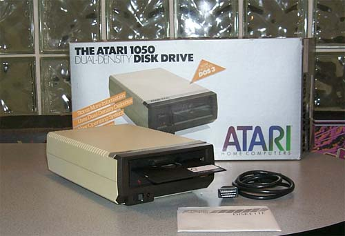
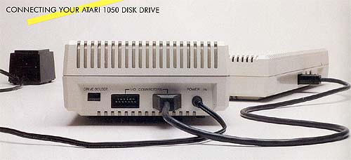

The Atari 1050 disk drive was Atari's replacement
to the Atari 810 disk drive. The new Atari 1050 disk drive
matched the new high-tech, low profile line of Atari XL home computer systems.
The original Atari 810 could hold single density data (88K out of 100K
diskettes) which was standard. The new Atari 1050 disk drives
were DUAL-DENSITY disk drives and could use the older Atari 810 diskettes,
but could also hold data in a new Enhanced Density mode of 127K.
Although the standard for disk drives was 180K, this additional storage
was welcomed by Atari users who bought the disk drives.
The only downside to the disk drives were their new version of Atari DOS:
3.0 which had compatibility problems with its earlier version: 2.0s
Atari would later fix this problem with a very well designed and accepted
and one of the most popular Atari versions of DOS: 2.5
Up to 4 Atari disk drives could be "daisy-chained" together.
Using Atari's unique SIO bus (Serial I/O), each drive would connect to
the next, forming a chain in which data was transferred.
Although slower then other I/O buses used on other computers, Atari's SIO
bus was a simple and convenient way for the non-computer literate to more
easily add components onto their Atari computer systems (other brands of
computers required internal cards, ribbon cables, complicated jumper block
settings which were geared more towards the computer hobbyist crowd instead
of the common individual with little computer knowledge).

The
disk drive electronics and its mechanism were done by Tandon, the case
design was done by Tom Palecki, formerly of Atari's Industrial Design group.
Tom was also responsible for the design of the Atari 1055 3.5" disk drive
which was never released by Atari, Inc. due to its sales in 1984.
The
Atari 1050 was initially shipped with the Disastrous DOS
3.0 which caused massive compatibility issues.
Later versions shipped with Atari DOS 2.0 and Atari had
planned a new DOS release in 1984 called DOS 4.0 - this
was also referred to as QDOS. This DOS was
meant to support the existing Atari 810 and 1050 disk
drives and also to support the upcoming (in 1984)
release the Atari 1053 which was a double sided/double
density disk drive (full 360K) as well as the Atari 1055
3.5" disk drive. Also supported was the new Atari
1450XLD parallel disk drives (also 360K).
To read more on
DOS 4.0
CLICK HERE